← Índice de los 69 tutes de IDA
Tute 6 · Aritméticas y lógicas
▶ video afín (mismo autor, en x64dbg): «08 Instrucciones 4» · se conecta con: Herramientas · IDA · Instrucciones · Flujo · Debugger · Números
INTRODUCCIÓN AL REVERSING CON IDA PRO DESDE CERO PARTE 6.
Instrucciones aritméticas y lógicas.
ADD A,B
Suma el valor de B a A y guarda el resultado en A.
A puede ser un registro o el contenido de una posición de memoria, B puede ser registro, una constante o el contenido de una posición de memoria (no se permite que A y B a la vez sean contenidos de posiciones de memoria en la misma instrucción)
Veamos algunos ejemplos de ADD buscando el texto ADD en el VEVIEWER.
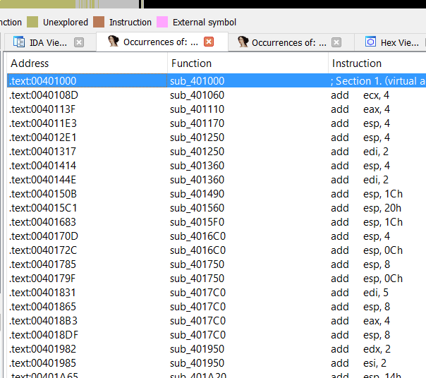
Ahí vemos muchos ejemplos de sumas donde el primer miembro es un registro y el segundo una constante, como sabemos se sumará al valor que tiene el registro en ese momento, el valor de la constante y se guardara en el registro.
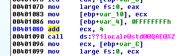
En este ejemplo si ECX vale 10000 se le suma la constante 4 y el resultado 10004 se guarda en el mismo ECX.
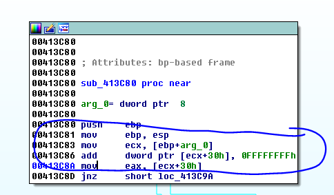
En este caso sumara 0xFFFFFFFF al valor que tenga previamente el contenido de la dirección a la que apunta ECX +30 siempre que dicha dirección tenga permiso de escritura, hará la suma y guardara el resultado allí.
Si ECX por ejemplo valiera 0x10000, en 0x10030 si el contenido fuera el valor 1 y a eso se le suma 0xFFFFFFFF que es -1 por lo tanto el resultado sería cero y se guardara en 0x10030.
En el CRACKME.EXE hay un ejemplo de la suma de dos registros.
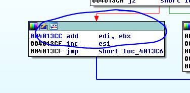
En ese caso se sumará el valor de ambos registros y se guardará en EDI.
Por supuesto también se pueden sumar registros de 16 bits y 8 bits.
ADD AL,8 ADD AX,8 ADD BX,AX ADD byte ptr ds: [EAX],7
Donde sumara al byte del contenido que apunta EAX el valor 7 y lo guardara en el mismo lugar.
Y todas las combinaciones posibles de sumas entre registros, contenidos de posiciones de memoria y constantes, como vimos todas las combinaciones son válidas, salvo que A sea una constante y que ambos sean contenidos de direcciones de memoria a la vez en la misma instrucción.
SUB A,B
Es exactamente igual a ADD salvo que en vez de realizar la operación suma en este caso restara enteros y guardara el resultado en A, las combinaciones posibles son las mismas.
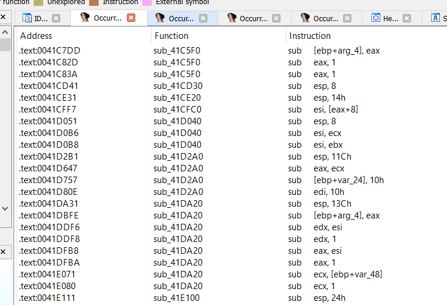
INC A y DEC A
Incrementa o decrementa un registro o contenido de posición de memoria en 1 es en realidad un caso especial de suma y resta.
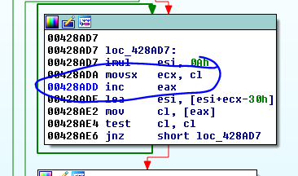
Ambas se utilizan por ejemplo para incrementar o decrementar contadores de a uno.
IMUL
Es la multiplicación entera y existen dos formas.
IMUL A,B
IMUL A,B,C
En la primera forma se realiza la multiplicación entera de ambos A y B y el resultado se guarda en A y en la segunda forma se multiplican B y C y el resultado se guarda en A.
En ambos casos A solo puede ser un registro B puede ser un registro o el contenido de una posición de memoria y C solo puede ser una constante.
imul eax, [ecx]
imul esi, edi, 25
Veamos si hay algún ejemplo en VEVIEWER
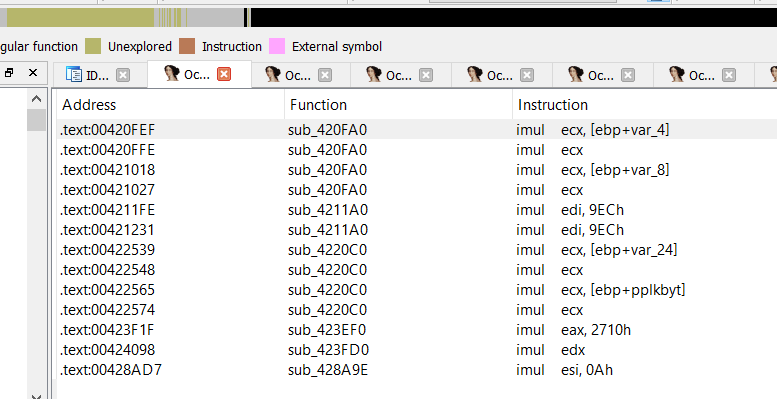
Vemos que hay solo ejemplos de la primera forma, en ambos casos multiplicara en forma entera ambos miembros y guardara en el primer miembro el resultado.
Del segundo caso no hay ejemplos
IMUL EAX,EDI,25
Multiplicara EDI por 25 y lo guardara en EAX es sencillo.
IDIV A
En este caso A marca solo el DIVISOR de la operación tanto el dividendo como el cociente no se especifican porque son siempre el mismo.
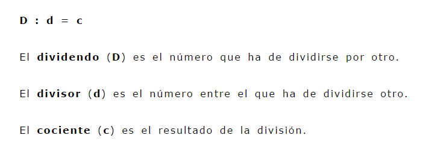
Lo que hace esta operación es armar un número más grande de 64 bits con los registros EDX como parte alta y EAX como parte baja dividir eso por A y guardarlo el resultado en EAX y el resto en EDX.
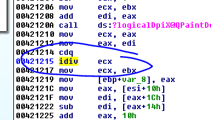
Si EAX por ejemplo vale 5, EDX vale cero y ECX vale 2 hará la división entera, el resultado de 5 dividido 2 será 2 y se guardara en EAX y el resto 1 en EDX.
Ocurrirá lo mismo si A es el contenido de una posición de memoria, EDX:EAX se dividirá contra ese valor y se guardara el resultado en EAX y el resto en EDX.
OPERACIONES LOGICAS
AND, OR o XOR
AND A,B
Realizara un AND entre ambos valores y guardara el resultado en A, lo mismo pasa con OR o XOR cada uno tiene sus tabla de verdad, se aplicara en cada miembro y el resultado se guardara en A.
A Y B pueden ser registros o contenidos de direcciones de memoria, pero es ilegal que ambos sean contenidos de memoria a la vez en la misma instrucción.
Los casos más usados son XOR de un mismo registro para ponerlo a cero fácilmente.
XOR EAX,EAX por ejemplo cualquiera sea el valor de EAX lo pondrá a cero ya que la tabla de verdad de XOR es.
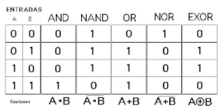
En este caso el resultado es la última columna y vemos que si XOREAMOS un numero contra si mismo solo se pueden dar al pasarlo a binario los casos que ambos bits sean cero o ambos sean uno, ya que como es el mismo número solo pueden ser iguales A y B y el resultado haciéndolo bit a bit siempre da cero en ambos casos.
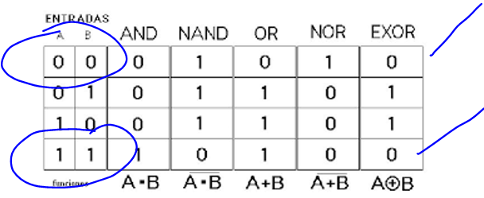
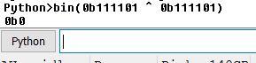
Escribiéndolo como binarios en la barra de Python y usando ^ que es el xor en Python veo que al xorear dos números iguales siempre da 0.
Por supuesto que se puede realizar con valores decimales y hexadecimales solo lo paso a binario para que sea vea cómo afecta bit a bit.
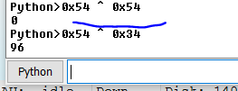
Otro uso sencillo es por ejemplo
AND EAX, 0f
Como 0F es en binario 1111
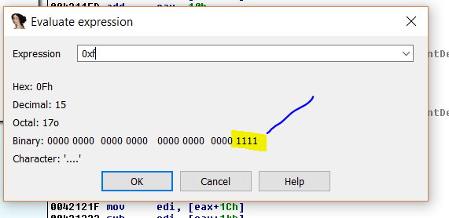
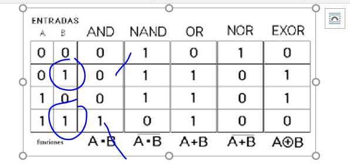
Vemos que siendo 1 el segundo miembro el resultado no variara quedara igual como era originalmente mientras que todos los otros bits se pondrán a cero.
De esta forma yo fácilmente puse a cero todos los bits de un número y deje los últimos 4 bits intactos.
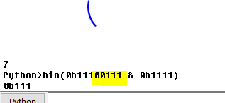
Allí vemos que el and en Python que se escribe & me deja el resultado en 0b0111 que eran los últimos cuatro bits originales.
En el caso de OR en Python se escribe como la barra vertical
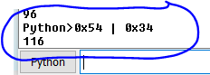
Siempre con una calculadora científica o con Python podemos resolver la operación sin tener que pasar a binario ambos y ver qué pasa bit a bit que es un poco pesado.
NOT A
Niega o invierte todos los bits de A y los guarda en el mismo A.
De este no existe instrucción en Python pero es muy sencillo si tienes 0101 y le aplicas NOT.
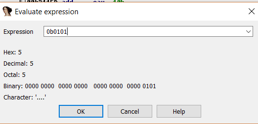
El resultado será al invertir bit a bit
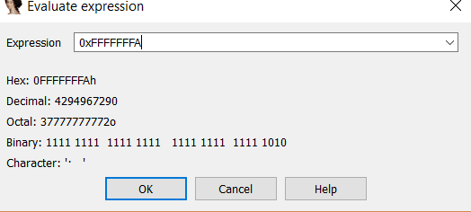
Vemos que todos los ceros se transformaron en unos y viceversa.
NEG A
NEG A transforma A en -A.
No es exactamente igual al ~ en Python ya que este al resultado le resta uno
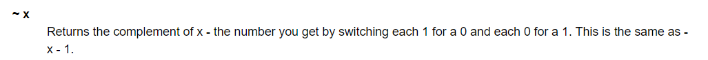
O sea que para hacer en Python un NEG de assembler hay que sumarle 1 al resultado.
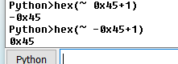
SHL, SHR
SHL A,B
SHR A,B
A puede ser un registro o una posición de memoria y B una constante o registro de 8 bits.
Estas instrucciones rotan a la izquierda (SHL) y a la derecha (SHR) ,los bytes que se van perdiendo por un lado son reemplazados por ceros que entran por el otro, veamos un ejemplo.
Si yo tengo, por ejemplo
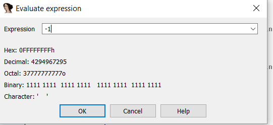
Y le hago SHL 2 quedara
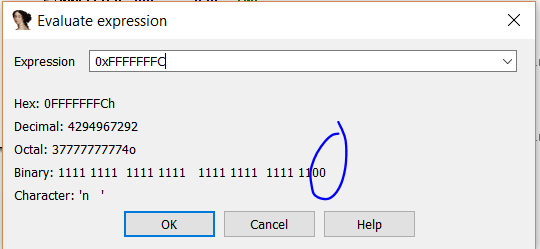
Ya que al mover a la izquierda dos lugares todos los bits, se cayeron dos bits por el lado izquierdo, que se rellenan con dos ceros por la derecha.
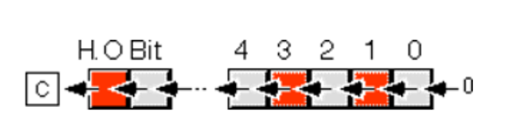
Lo mismo si hacemos SHR se moverán hacia la derecha e irán cayendo y los que caigan por la derecha se reemplazaran por ceros por el lado izquierdo.
Existen también las instrucciones ROL Y ROR que son similares rotan cierta cantidad de bits pero en este caso los que se caen por un lado retornan con su mismo valor por el otro es una rotación pura en ese caso ya que no se cambia ningún bit solo se rotan.
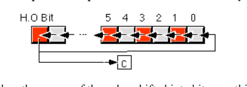
Bueno hasta la parte 7.
Ricardo Narvaja